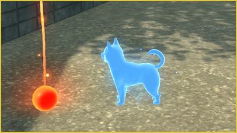

Blasters: Modo cooperativo
Si posees "Yo-kai Watch 4: We Look Up at the Same Sky", necesitarás adquirir el DLC de pago para jugar a "Blasters++" (los poseedores de "Yo-kai Watch 4++" no necesitan comprarlo).
Tras hablar con Capi-Cachas, si eliges "Desplegarse con jugadores cercanos" o "Desplegarse con jugadores lejanos", podrás cooperar con otros jugadores en un equipo de hasta 4 personas.
Ten en cuenta que para disfrutar del modo cooperativo mediante la opción "Desplegarse con jugadores lejanos", es necesario suscribirse a Nintendo Switch Online (de pago).
Desplegarse con jugadores cercanos (Comunicación local)
- ① Al seleccionar "Desplegarse con jugadores cercanos", se iniciará la conexión y se mostrará una lista de misiones disponibles.
- ② Para unirte a la partida de otro jugador como invitado, selecciona la misión a la que quieras acceder desde la "Lista de misiones".
Si prefieres actuar como anfitrión, elige "Crear un grupo" para seleccionar la misión y buscar participantes. - ③ Los invitados deben seleccionar "¡Listo!" en la pantalla de espera a que empiece la misión.
En cuanto el anfitrión elija "¡Vamos, Blasters!", dará comienzo la partida.
Desplegarse con jugadores lejanos (Comunicación online)
- ① Al seleccionar "Desplegarse con jugadores lejanos", se iniciará la conexión y aparecerá una lista de las misiones disponibles.
- ② Para unirte a la sala de alguien como invitado, elige una misión de la "Lista de misiones". Si presionas Ⓨ, se abrirá el panel de búsqueda para filtrar la lista según las condiciones que elijas. Para actuar como anfitrión, selecciona "Crear un grupo" para configurar los ajustes de la sala y buscar aliados.
- ③ Los invitados deberán seleccionar "¡Listo!" en la sala de espera. La misión comenzará en cuanto el anfitrión presione "¡Vamos, Blasters!".
Condiciones de configuración de la misión
| Misión | Selecciona la misión concreta en la que quieras participar. |
|---|---|
| Miembros | Elige entre "Cualquiera" o "Solo amigos" |
| Rango | Permite limitar el rango mínimo o máximo de los participantes. |
| Mensaje | Muestra una frase corta seleccionada de la lista de comentarios. |
| Contraseña | Si la activas, tu partida no aparecerá en las listas públicas. Solo los jugadores que introduzcan la misma contraseña exacta podrán unirse. |
Misiones en modo cooperativo
En el modo multijugador, cada persona tomará el control del Yo-kai que tenga asignado como Líder. Cuando la partida sea de 3 o menos personas, algunos Yo-kai acompañantes serán controlados por la CPU. Coordínate con los demás jugadores usando el chat y las señales visuales para avanzar.
Naviwoof++
Si tu personaje sufre una ascensión (cae derrotado) durante el modo cooperativo, te transformarás en un "Naviwoof++".
Aunque en esta forma no podrás luchar, sí podrás moverte para recoger Orbes Oni y objetos del mapa.
※ La misión se considerará un fracaso si todos los jugadores caen derrotados o acaban transformados en "Naviwoofs++".
